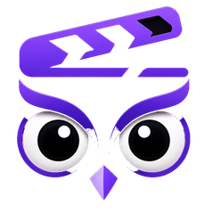

SceneOwl é um app para acompanhar os filmes e séries que você assiste: monte sua watchlist, avalie e comente títulos, acompanhe seu progresso episódio a episódio e siga o que seus amigos estão assistindo.
Você pode navegar sem conta. Criar uma conta (por e-mail ou entrando com o Google) só é necessário para os recursos ligados a você: sua watchlist, suas avaliações, seus comentários e seguir outras pessoas. Ao entrar com o Google, o SceneOwl recebe apenas seu nome, foto de perfil e e-mail, usados só para criar e identificar sua conta. Contato: contato@sceneowl.com
SceneOwl is an app for tracking the movies and TV shows you watch: build a watchlist, rate and comment on titles, track your episode-by-episode progress, and follow what your friends are watching.
You can browse without an account. Creating an account (by email or by signing in with Google) is only required for the features tied to you: your watchlist, your ratings, your comments, and following other people. When you sign in with Google, SceneOwl receives only your name, profile picture, and email address, used solely to create and identify your account. Contact: contato@sceneowl.com